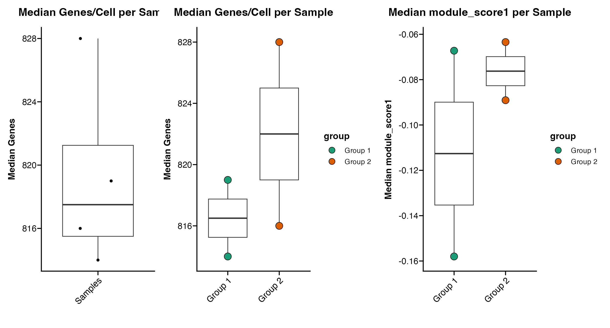

vignettes/articles/Statistics.Rmd
Statistics.RmdscCustomize contains a couple simple helper functions to return metrics of interest.
For this vignette I will be utilizing pbmc3k dataset from the SeuratData package.
# Load Packages
library(ggplot2)
library(dplyr)
library(magrittr)
library(Seurat)
library(scCustomize)
library(qs)
# Load example dataset for tutorial
pbmc <- pbmc3k.SeuratData::pbmc3k.finalNow let’s add some extra meta data for use with tutorial
# Add mito and ribo data
pbmc <- Add_Mito_Ribo_Seurat(seurat_object = pbmc, species = "human")
# Add random sample and group variables
pbmc$orig.ident <- sample(c("sample1", "sample2", "sample3", "sample4"), size = ncol(pbmc), replace = TRUE)
pbmc@meta.data$group[pbmc@meta.data$orig.ident == "sample1" | pbmc@meta.data$orig.ident == "sample3"] <- "Group 1"
pbmc@meta.data$group[pbmc@meta.data$orig.ident == "sample2" | pbmc@meta.data$orig.ident == "sample4"] <- "Group 2"
# Add dummy module score
pbmc <- AddModuleScore(object = pbmc, features = list(c("CD3E", "CD4", "THY1", "TCRA")), name = "module_score")It can be really helpful to know the number and percentage of cells
per identity/cluster during analysis.
scCustomize provides the Cluster_Stats_All_Samples function
to make this easy.
cluster_stats <- Cluster_Stats_All_Samples(seurat_object = pbmc)
cluster_stats| Cluster | Number | Freq | sample1 | sample2 | sample3 | sample4 | sample1_% | sample2_% | sample3_% | sample4_% |
|---|---|---|---|---|---|---|---|---|---|---|
| Naive CD4 T | 697 | 26.4215315 | 188 | 181 | 166 | 162 | 27.7286136 | 26.7355982 | 27.1685761 | 24.1071429 |
| Memory CD4 T | 483 | 18.3093252 | 117 | 132 | 101 | 133 | 17.2566372 | 19.4977843 | 16.5302782 | 19.7916667 |
| CD14+ Mono | 480 | 18.1956027 | 106 | 126 | 143 | 105 | 15.6342183 | 18.6115214 | 23.4042553 | 15.6250000 |
| B | 344 | 13.0401820 | 100 | 75 | 79 | 90 | 14.7492625 | 11.0782866 | 12.9296236 | 13.3928571 |
| CD8 T | 271 | 10.2729340 | 73 | 79 | 52 | 67 | 10.7669617 | 11.6691285 | 8.5106383 | 9.9702381 |
| FCGR3A+ Mono | 162 | 6.1410159 | 42 | 34 | 34 | 52 | 6.1946903 | 5.0221566 | 5.5646481 | 7.7380952 |
| NK | 155 | 5.8756634 | 37 | 40 | 28 | 50 | 5.4572271 | 5.9084195 | 4.5826514 | 7.4404762 |
| DC | 32 | 1.2130402 | 9 | 9 | 6 | 8 | 1.3274336 | 1.3293944 | 0.9819967 | 1.1904762 |
| Platelet | 14 | 0.5307051 | 6 | 1 | 2 | 5 | 0.8849558 | 0.1477105 | 0.3273322 | 0.7440476 |
| Total | 2638 | 100.0000000 | 678 | 677 | 611 | 672 | 100.0000000 | 100.0000000 | 100.0000000 | 100.0000000 |
By default Cluster_Stats_All_Samples uses “orig.ident”
as the group variable but user can specify any @meta.data
slot variable.
cluster_stats <- Cluster_Stats_All_Samples(seurat_object = pbmc, group_by_var = "group")
cluster_stats| Cluster | Number | Freq | Group 1 | Group 2 | Group 1_% | Group 2_% |
|---|---|---|---|---|---|---|
| Naive CD4 T | 697 | 26.4215315 | 354 | 343 | 27.4631497 | 25.4262417 |
| Memory CD4 T | 483 | 18.3093252 | 218 | 265 | 16.9123351 | 19.6441809 |
| CD14+ Mono | 480 | 18.1956027 | 249 | 231 | 19.3173002 | 17.1237954 |
| B | 344 | 13.0401820 | 179 | 165 | 13.8867339 | 12.2312824 |
| CD8 T | 271 | 10.2729340 | 125 | 146 | 9.6974399 | 10.8228317 |
| FCGR3A+ Mono | 162 | 6.1410159 | 76 | 86 | 5.8960434 | 6.3750927 |
| NK | 155 | 5.8756634 | 65 | 90 | 5.0426687 | 6.6716086 |
| DC | 32 | 1.2130402 | 15 | 17 | 1.1636928 | 1.2601927 |
| Platelet | 14 | 0.5307051 | 8 | 6 | 0.6206362 | 0.4447739 |
| Total | 2638 | 100.0000000 | 1289 | 1349 | 100.0000000 | 100.0000000 |
It can also be informative to understand the percent of cells/nuclei
that express a given feature or set of features.
scCustomize provides the Percent_Expressing function to
return these results.
percent_express <- Percent_Expressing(seurat_object = pbmc, features = c("CD4", "CD8A"))| Naive.CD4.T | Memory.CD4.T | CD14..Mono | B | CD8.T | FCGR3A..Mono | NK | DC | Platelet | |
|---|---|---|---|---|---|---|---|---|---|
| CD4 | 6.743185 | 15.942029 | 24.375 | 1.453488 | 2.583026 | 27.160494 | 0.6451613 | 34.375 | 0 |
| CD8A | 13.342898 | 8.902691 | 1.875 | 2.616279 | 50.553505 | 3.703704 | 8.3870968 | 3.125 | 0 |
By default the function groups expression across
@active.ident (see above) but user can specify difference
variable if desired.
percent_express <- Percent_Expressing(seurat_object = pbmc, features = c("CD4", "CD8A"), group_by = "orig.ident")| sample4 | sample3 | sample2 | sample1 | |
|---|---|---|---|---|
| CD4 | 10.71429 | 12.765957 | 12.99852 | 10.47198 |
| CD8A | 12.35119 | 9.819967 | 12.70310 | 12.09440 |
User can also supply a split_by variable to quantify
expression within group split by meta data variable
percent_express <- Percent_Expressing(seurat_object = pbmc, features = c("CD4", "CD8A"), split_by = "group")| Naive.CD4.T_Group.2 | Naive.CD4.T_Group.1 | Memory.CD4.T_Group.1 | Memory.CD4.T_Group.2 | CD14..Mono_Group.1 | CD14..Mono_Group.2 | B_Group.2 | B_Group.1 | CD8.T_Group.2 | CD8.T_Group.1 | FCGR3A..Mono_Group.2 | FCGR3A..Mono_Group.1 | NK_Group.1 | NK_Group.2 | DC_Group.1 | DC_Group.2 | Platelet_Group.1 | Platelet_Group.2 | |
|---|---|---|---|---|---|---|---|---|---|---|---|---|---|---|---|---|---|---|
| CD4 | 9.037901 | 4.519774 | 16.055046 | 15.849057 | 25.702811 | 22.943723 | 1.818182 | 1.117318 | 2.739726 | 2.4 | 23.255814 | 31.578947 | 1.538461 | 0.000000 | 26.66667 | 41.176471 | 0 | 0 |
| CD8A | 13.411079 | 13.276836 | 8.256881 | 9.433962 | 1.204819 | 2.597403 | 2.424242 | 2.793296 | 52.739726 | 48.0 | 4.651163 | 2.631579 | 10.769231 | 6.666667 | 0.00000 | 5.882353 | 0 | 0 |
Users can also supply a threshold value to quantify percent of cells
expressing feature(s) above a certain threshold (be sure to note which
slot is being used to quantify expression when setting
thresholds).
NOTE: Percent_Expressing currently only supports single
threshold across all features
percent_express <- Percent_Expressing(seurat_object = pbmc, features = c("CD4", "CD8A"), threshold = 2)| Naive.CD4.T | Memory.CD4.T | CD14..Mono | B | CD8.T | FCGR3A..Mono | NK | DC | Platelet | |
|---|---|---|---|---|---|---|---|---|---|
| CD4 | 1.147776 | 0.621118 | 5.8333333 | 0.5813953 | 0.3690037 | 1.851852 | 0.000000 | 3.125 | 0 |
| CD8A | 6.456241 | 2.070393 | 0.2083333 | 0.8720930 | 24.7232472 | 0.000000 | 3.225807 | 0.000 | 0 |
scCustomize contains function Median_Stats to quickly
calculate the medians for basic QC stats (Genes/, UMIs/, %
Mito/Cell).
By default Median_Stats will calculate medians for the
following meta data columns (if present): “nCount_RNA”, “nFeature_RNA”,
“percent_mito”, “percent_ribo”, “percent_mito_ribo”.
median_stats <- Median_Stats(seurat_object = pbmc, group_by_var = "orig.ident")| orig.ident | Median_nCount_RNA | Median_nFeature_RNA | Median_percent_mito | Median_percent_ribo | Median_percent_mito_ribo |
|---|---|---|---|---|---|
| sample1 | 2194.5 | 805.5 | 2.003518 | 37.25269 | 39.27299 |
| sample2 | 2222.0 | 826.0 | 2.029664 | 36.19384 | 38.14602 |
| sample3 | 2190.0 | 810.0 | 1.978333 | 37.04600 | 39.55600 |
| sample4 | 2247.5 | 829.5 | 2.045341 | 36.95326 | 39.01543 |
| Totals (All Cells) | 2213.0 | 819.0 | 2.010702 | 36.92524 | 39.03276 |
In addition to default variables, users can supply their own
additional meta data columns to calculate medians using the
median_var parameter.
NOTE: The meta data column must be in numeric format (e.g., integer,
numeric, dbl)
median_stats <- Median_Stats(seurat_object = pbmc, group_by_var = "orig.ident", median_var = "module_score1")| orig.ident | Median_nCount_RNA | Median_nFeature_RNA | Median_percent_mito | Median_percent_ribo | Median_percent_mito_ribo | Median_module_score1 |
|---|---|---|---|---|---|---|
| sample1 | 2194.5 | 805.5 | 2.003518 | 37.25269 | 39.27299 | -0.1113422 |
| sample2 | 2222.0 | 826.0 | 2.029664 | 36.19384 | 38.14602 | -0.0163149 |
| sample3 | 2190.0 | 810.0 | 1.978333 | 37.04600 | 39.55600 | -0.0992732 |
| sample4 | 2247.5 | 829.5 | 2.045341 | 36.95326 | 39.01543 | -0.1633022 |
| Totals (All Cells) | 2213.0 | 819.0 | 2.010702 | 36.92524 | 39.03276 | -0.0922378 |
In addition to calculating the median values scCustomize includes
function to calculate the median absolute deviation for each of those
features with function MAD_Stats. By setting the parameter
mad_num the function will retrun the MAD*mad_num.
mad <- MAD_Stats(seurat_object = pbmc, group_by_var = "orig.ident", mad_num = 2)| orig.ident | MAD x 2 nCount_RNA | MAD x 2 nFeature_RNA | MAD x 2 percent_mito | MAD x 2 percent_ribo | MAD x 2 percent_mito_ribo |
|---|---|---|---|---|---|
| sample1 | 704.9763 | 206.8227 | 0.7982724 | 11.35328 | 11.34943 |
| sample2 | 677.5482 | 177.9120 | 0.7734028 | 12.37451 | 12.15056 |
| sample3 | 735.3696 | 182.3598 | 0.7420511 | 12.76243 | 12.72737 |
| sample4 | 745.7478 | 193.4793 | 0.7810274 | 11.15944 | 11.07036 |
| Totals (All Cells) | 721.2849 | 189.7728 | 0.7721931 | 11.86828 | 11.69341 |
scCustomize also contains series of functions for plotting the results of these median calculations:
Plot_Median_Genes(seurat_object = pbmc)
Plot_Median_Genes(seurat_object = pbmc, group_by = "group")
Plot_Median_Other(seurat_object = pbmc, median_var = "module_score1", group_by = "group")